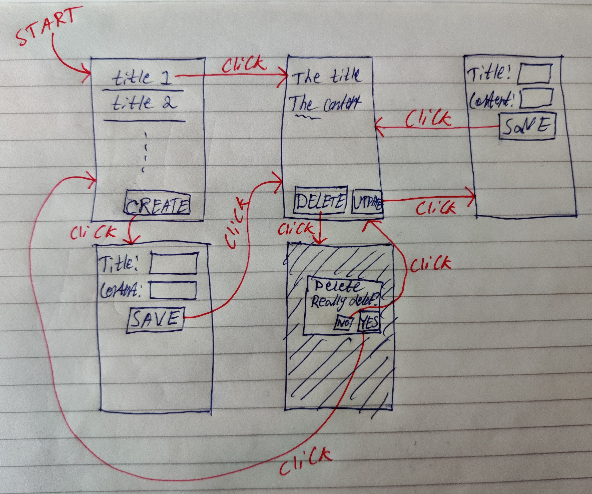

# Laboratory Work
On this page you find information about the examination test Laboratory Work.
- Number of credits
- 1.5
- Grades
- Fail
- Pass
- How to work
- Individually
- Goal
- To learn the basics in Android Development.
- Instructions
- Complete and present your solution to the lab described on this page to a teacher at a lab session.
- Help
- Ask the teacher for help at the lab sessions.
# Installing Required Software
In this course, we will only use Android Studio and the tools that come with it to create Android applications.
# On the school's computers
If you work on a computer in E2404, E2432 or E2433, all required software should already be installed for you, so no need to install anything yourself.
If you work on a school computer in any other room, you need to manually install the required software through the Software Center application (unless someone already has done that on the specific computer you are using).
# On your own computer
If you work on your own private computer, you need to download and install all required software yourself. In this course all required software is available for free for both Windows, Mac and Linux.
Just follow the instructions at https://developer.android.com/studio/index.html to download and install Android Studio.
To test the android applications you create, you need to run them on an Android device. If you have your own smartphone or tablet running Android you can use that one, just connect it to your computer using a USB cable.
For Windows users
On Windows you need to Install OEM USB drivers to be able to install Android applications on your connected Android device.
To more easily debug applications when they run on your own Android device, you need to Configure on-device developer options.
If you don't have your own Android device to run your Android applications on, you can use an Android emulator that comes with Android Studio. If the emulator has not automatically been configured to take advantage of VM acceleration when Android Studio was installed, we highly recommend you to configure it to take advantage of the speed improvements (so the emulator lag less) by Configuring VM acceleration. This is a good idea even if you have a physical Android device to test on, because you probably want to test run your Android applications on different versions of Android, different screen sizes, etc., which is easy to do on an emulator, but impossible to do on a physical device.
For Windows users
Those of you taking the course Web Development - Advanced Concepts will be using VM acceleration to run your Docker containers. If you do that in Windows Subsystem for Linux, then you can't use VM acceleration for your Android device in this course. If your computer runs Windows 10 Pro (and not Windows 10 Home), then you can use Hyper-V to enable VM acceleration for both Docker and Android. Read more about that on the following pages:
Note!
Getting VM acceleration to work is sometimes hard. If the emulator for some reason can't use it, it's hard to debug the reason. For example, you might get the error message This computer meets requirements for HAXM, but VT-x is not turned on, and the problem could be that an antivirus program doesn't allow it to be used. Your development experience will be much better if you manage to enable VM acceleration, but it's probably not worth spending 20 hours on trying to get it to work.
Android Studio often reads from and writes to many files, such as when you create a new Android Studio project or when you build your application. To be efficient, it's important that reading from and writing to files is fast. There are some known cases slowing down this process, such as:
- Antivirus programs you have installed
- Windows Defender
- Windows File Indexing
Nowadays Android Studio might install exceptions to these programs, improving the build performance, but if Android Studio is slow, you might want to investigate this.
For Windows users
You can often find out what's slowing down Android Studio by using the Task Manager to find the process that allocates much of your computer resources when Android Studio is slow, and then try to configure it to ignore Android Studio's folders. For example, see configure Windows Defender and Windows File Indexing to ignore Android Studio folders.
A fast CPU and an SDD instead of an HDD will of course also make Android Studio run faster as well; running Android Studio on a weak laptop usually gives you a very bad development experience.
# The Assignment
The Graphical User Interface (GUI) for an Android application is to a large extent structured the same way as for a website (which you probably are acquaintance with).
| Website | Android application |
|---|---|
| Consists of multiple webpages. | Consists of multiple activities. |
| One webpage is shown at a time. | One activity is shown at a time. |
| URIs are used to identify webpages. | Intents are used to identify activities. |
When designing the GUI for an Android application it is hence important to think of which activities it should consist of. Traditionally, websites have been designed to be used by desktop computers with a large screen, and it's not uncommon to see a webpage you can do multiple things on, such as a webpage with both a "sign in" form, a "sign up" form and a "I forgot my password" form.
Android applications on the other hand often run on devices with a small screen, and there's not enough room to display more than one functionality at a time. Hence one functionality per activity is a good guideline, which you should follow in this lab.
Note
With the introduction of fragments in Android API level 11 (Android 3), the guideline One functionality per activity is not that accurate since an entire application can consist of a single activity that changes which fragments it's displaying, and each fragment provides a functionality of some kind. Hence, One feature per screen might be a more accurate guideline.
In this lab you should implement a simple ToDo app, in which users can create, view, edit and delete ToDo items. Start by creating a new project in Android Studio. To start easy, add an Empty Activity initially, only support the latest version of Android and use Kotlin as your programming language (feel free to use Java if you want, but the code mentioned below on this page is Kotlin code).
A ToDo item will be represented using the ToDo class shown in below. That code can be put in a new Kotlin file named Todo.kt, or similar.
package XXX
data class ToDo(
val id: Int,
var title: String,
var content: String
){
override fun toString() = title
}
The data in your application is optimally stored in the built in supported SQLite database, but to simplify this lab (which primarily is about using activities) we will instead store the ToDo items in a global variable as shown in below.
package XXX
// Global variable used to store all ToDos.
val toDoRepository = ToDoRepository().apply {
// Let's add two initial ToDos.
addToDo(
"Feed the pets",
"Give the cat a fish and the dog a cat."
)
addToDo(
"Exercise",
"Take a walk and listen to music."
)
}
class ToDoRepository{
private val toDos = mutableListOf<ToDo>()
fun addToDo(title: String, content: String): Int{
val id = when {
toDos.count() == 0 -> 1
else -> toDos.last().id+1
}
toDos.add(ToDo(
id,
title,
content
))
return id
}
fun getAllToDos() = toDos
fun getToDoById(id: Int) =
toDos.find {
it.id == id
}
fun deleteToDoById(id: Int) =
toDos.remove(
toDos.find {
it.id == id
}
)
fun updateToDoById(id: Int, newTitle: String, newContent: String){
getToDoById(id)?.run{
title = newTitle
content = newContent
}
}
}
Now we have the handling of the data in the application done, now we just need to build the graphical user interface on top of this to allow the user to see and modify the data. The final application should be as shown in below.

You should support at least 2 languages (English + another one), but the data (title and content of the ToDo items) will of course only be available in one language.
# MainActivity
The MainActivity should list the titles of all ToDo items and have a CREATE button. Clicking on one of the titles should start the ViewToDoActivity that displays more information about the ToDo that was clicked (pass the id of the clicked ToDo item in the intent), and clicking on the CREATE button should start the CreateToDoActivity.
The layout for the MainActivity can be a ConstraintLayout that displays a Button at the bottom of the layout and a ListView in the rest of the space above it. The ListView will in turn display the title of each ToDo item. To do that, you can use code like the one shown below in the Activity's onCreate() (you need to add a <ListView> to your layout with appropriate attributes).
val listView = theActivity.findViewById<ListView>(R.id.list_view)
listView.adapter = ArrayAdapter<ToDo>(
aContext,
android.R.layout.simple_list_item_1,
android.R.id.text1,
toDoRepository.getAllToDos()
)
Then you also need to register a click listener on the listView for listening for clicks on the ToDo items in it.
# CreateToDoActivity
The CreateToDoActivity should display a form through which the user can enter the title and content of a new ToDo item. When a new ToDo item has successfully been created the user should be taken to the ViewToDoActivity displaying the ToDo item the user just created (pass the id of the newly created ToDo item in the intent).
You can use an EditText to let the user enter som text. You can then use the code in below to read out what text the user has entered in the EditText.
val title = theActivity.findViewById<EditText>(
R.id.title_edit_text
).editableText.toString()
Add some kind of validation so the user can't add bad ToDo items, such as a ToDo item with a too short/long title/content. Display descriptive error messages to the user if something is invalid, e.g. change the text in a TextView.
Listen for user typing
If you want to listen for when the user types something in an EditText you can use a TextWatcher. This way you can validate the input as the user types it (i.e. give immediate feedback), and, for example, disable the SAVE button when the input is invalid, and enable it when the input is valid.
Make it more beautiful
Instead of using an EditText you can use a TextInputLayout together with a TextInputEditText to make it look a bit more beautiful.
Improving back navigation
When the user has created a new ToDo item and ended up at the ViewToDoActivity and then clicks on the back button, the user probably wants to end up at the MainActivity, and not at the CreateToDoActivity. To make that happen, you can in the CreateToDoActivity call finish() after you have started the ViewToDoActivity.
Updating the MainActivity
When the user navigates back to the MainActivity after having created a new ToDo item, you need to tell the ListView to re-render itself, since it's data source (the list with all ToDo items) has changed. You can do that by calling the notifyDataSetChanged() method on your ArrayAdapter in the MainActivity's onStart() method.
# ViewToDoActivity
The ViewToDoActivity should display all information about a ToDo item with a specific id. This activity should define the name of an extra argument that can be put in the Intent starting this activity, specifying the id of the ToDo item to display information about. This can be put in the class's companion object, as shown in below.
companion object {
const val EXTRA_TODO_ID = "TODO_ID"
}
The ViewToDoActivity activity should also contain an UPDATE button and a DELETE button. Clicking on the UPDATE button should start the UpdateToDoActivity, where the user can change the title and content of the currently displayed ToDo item. Clicking on the DELETE button should display a dialog where the user can confirm the she wants to delete the ToDo item. To display the dialog, you can use the code shown in below.
// TODO: Don't hardcode strings in English.
AlertDialog.Builder(aContext)
.setTitle("Delete ToDo")
.setMessage("Do you really want to delete it?")
.setPositiveButton(
"Yes"
) { dialog, whichButton ->
// Delete it.
}.setNegativeButton(
"No"
) { dialog, whichButton ->
// Do not delete it.
}.show()
If the user deletes the ToDo item, take the user back to the MainActivity.
Runtime configuration changes not handled
The dialog in above does not survive runtime configuration changes. For example, try showing the dialog and then rotate the screen. The dialog disappears since a runtime configuration change occurred, causing the activity to be destroyed and then re-created. Handled properly, the dialog should still be shown after the activity has been re-created, but handling that is not part of this lab.
Text overflow
What happens if you have a ToDo item with a very long text (or use a device with a very small screen) so all text can't be shown on the screen at once? Can you scroll to see the rest of it? Nope, not unless you use a ScrollView or similar. Using that is always a good idea when you display text that you are not sure will fit on all screens (i.e. in most cases).
# UpdateToDoActivity
You should be able to figure out how to implement the UpdateToDoActivity on your own. Good luck!
# Checklist
Before you present your work to a teacher, make sure that:
- At least two different languages are supported throughout the entire application.
- You validate the user input when creating and updating a ToDo item and display descriptive error messages if something is invalid.
- The back navigation always makes sense (especially after you have created, deleted or updated a ToDo item.
- The data shown on the screen always is up to date (especially after you have created, deleted or updated a ToDo item).
- The user always can properly use the GUI no matter how small screen the user has or how long texts the ToDo items contain.
- You understand how all code in your application works.
# Present your work
Present your work to a teacher at one of the lab sessions. You should be able to explain how all code in your application works, and the teacher will ask you some questions about it to verify this. If the teacher is satisfied with your presentation he will approve you on the Canvas assignment The Lab.
# Optional exercises
These exercises are not part of the laboratory work. Feel free to complete them to practice on using various techniques/concepts used in Android applications before you apply them in your project work. If you get stuck you can always ask the teacher at a lab session for help. When you're done, feel free to discuss your solution with a teacher at a lab session to get some feedback on your work.
# Handling runtime configuration changes
In the ViewToDoActivity, when the activity starts, create a new instance of TextToSpeech and use it to speak out loud the title and the content of the ToDo item.
When the user rotates the screen, a runtime configuration change will take place, causing the activity to be destroyed and re-created. This should be transparent to the user, but if you don't write special code handling that, you will in the re-created activity create a new instance of TextToSpeech again and tell it to speak out loud the title and the content of the ToDo item again. That should not happen.
And if the user chooses to leave the activity before your TextToSpeech instance is done saying the entire title and content, you need to tell your TextToSpeech instance to stop talking. As a result, your TextToSpeech instance needs to survive configuration changes. This can be done using a model fragment (a fragment with no GUI and that has been set to retain it's instance) (old solution) or using a ViewModel (modern solution).
Think twice about the context
When creating a new instance of the TextToSpeech class you need to pass it a context. Using the activity as the context works, but if the activity is destroyed and re-created, the destroyed activity can't be garbage collected since the TextToSpeech instance holds a reference to it. Therefor (as in many other cases) it is better to pass it the context anActivity.applicationContext instead.
In the ViewToDoActivity you can also try to handle runtime configuration changes so the delete dialog appears as it should when the activity is re-created. To make that happen you should use a DialogFragment to show the dialog.
# Storing data in a database
Store data in the built-in supported SQLite database. Either do it the old way using SQLiteOpenHelper, or do it the more modern way using the Room Persistence Library.
Think twice about the context
To work with the SQLite database you need to pass it a context. If your database communication object outlives your activity (e.g. if you use the singleton pattern), using the activity as the context is bad, since the activity can't be garbage collected when the user leaves it, so rather (as usual) use anActivity.applicationContext as your context instead.
# Storing data in Firestore
Store your data in Firestore. Let the user create and login to a new account, and then store the ToDo items in Firestore. This way, it doesn't matter which device the user is using, she can access her ToDo items on all of them!
# Using a RecyclerView
In MainActivity, instead of using a ListView to display the title of all ToDo items, use a RecyclerView. Allow the user to delete a ToDo item simply by swiping the title of the ToDo item to the side.
# Using Notifications
Add a timestamp to each ToDo item representing a deadline for when that ToDo item should be completed. Then use the AlarmManager to create an Intent that is broadcasted each day (e.g. at 09:00; can potentially be configured by the user through a SettingsActivity), and then create a BroadcastReceiver listening for this Intent, and when your receiver receives the intent, display a notification to the user with information about which ToDo items that needs to be completed within 24 hours.